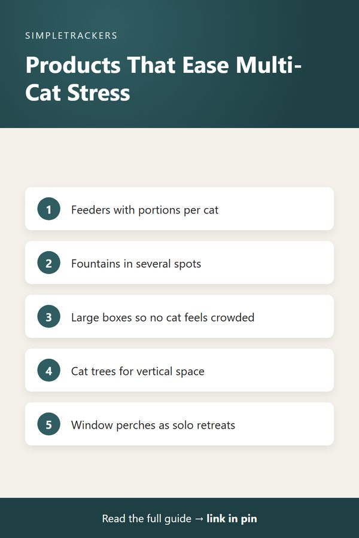

Multi-Cat Household Essentials: Products That Actually Help

As an Amazon Associate I earn from qualifying purchases.
Key takeaways
- Reduce competition: per-cat feeders, multiple water sources and enough large litter boxes turn conflict points into individual spaces.
- Add vertical and solo space: cat trees, window perches and scratching posts let each cat claim territory without constant conflict.
- Make observation easier: separate stations, cameras and regular grooming give you clearer per-cat data.
- Track what changes: the real value of any product is what you notice afterwards.
Managing a multi-cat household is about far more than tracking observations in a spreadsheet. It's about creating an environment where each cat can thrive, express natural behaviors and live comfortably alongside the other cats.
The right products turn potential conflict points into opportunities for individual expression, reducing stress for both cats and owners. Combine a well-designed living space with systematic tracking of how each cat uses and responds to these resources, and you gain real insight into whether your setup is truly working.
About this list
These are time-tested product categories that solve common multi-cat challenges. Rather than recommending specific brands, which can change in availability and performance, each section links to an Amazon search so you can find current options and read reviews from other multi-cat households.
| Product | Main multi-cat problem it addresses |
|---|---|
| Automatic feeders | One cat eating faster or monopolizing shared bowls |
| Water fountains | Cats avoiding a shared water bowl |
| Large litter boxes | Cats feeling crowded or vulnerable in the box |
| Self-cleaning litter boxes | Constant scooping; box avoidance by sensitive cats |
| Litter trapping mats | Extra litter scatter around boxes |
| Multi-level cat trees | Not enough vertical space to escape and observe |
| Window perches | Dominant cats monopolizing the best spots |
| Scratching posts | Conflict over territorial marking |
| Cat playpens | New-cat introductions and ongoing tension |
| Grooming brushes | Mats and tangles; little close contact with each cat |
| Nail clippers | Damage from scratching conflicts |
| Elevated feeding stations | Cats eating around each other at floor level |
| Pet monitoring cameras | Not knowing which cat is doing what |
| Cat carriers | Stressful vet visits and transport |
Automatic Feeders
With multiple cats, portion control per cat becomes crucial, especially if one cat eats faster or monopolizes shared bowls. A programmable automatic feeder lets you assign separate meal times and portions per station, so each cat gets their intended amount without competition.
For tracking: as you follow each cat's appetite patterns, a feeder gives you precise data points about consumption instead of estimates from visual inspection. Browse automatic cat feeders on Amazon.
Pet Water Fountains
Cats in multi-cat homes sometimes avoid shared water bowls because of social anxiety or dominance dynamics. A fountain provides moving, aerated water that many cats prefer, and lets you set up several water sources around your home to reduce competition and encourage better hydration.
For tracking: fountains make it easier to see which cats drink from which locations and how their consumption shifts over time. Browse pet water fountains on Amazon.
Large Litter Boxes
The standard rule for multi-cat households is one litter box per cat, plus one extra. The boxes themselves also need to be big enough that cats don't feel crowded or vulnerable. Larger boxes give each cat comfortable space and reduce the likelihood of avoidance or inappropriate elimination.
For tracking: larger boxes make it easier to observe frequency and consistency, without several cats' waste mixing together in a space too small to parse. Browse large litter boxes on Amazon.
Self-Cleaning Litter Robots
Automated litter boxes take over the constant scooping of multiple cats' waste. That saves you time and keeps litter consistently fresh, which can prevent litter box avoidance in sensitive cats.
For tracking: because these systems clean themselves after each use, waste from different cats is separated by the cleaning cycle, giving you a clearer picture of individual habits. Tracking which cats use the box and when becomes more granular. Browse self-cleaning litter boxes on Amazon.
Litter Trapping Mats
Multi-cat households generate significantly more litter scatter. A quality litter-trapping mat catches stray litter before it spreads through your home, making cleanup faster and extending the life of your litter supply.
For tracking: less time cleaning up mess means more time observing behavior, and less waste on the floor makes it easier to estimate consumption per cat. Browse litter trapping mats on Amazon.
Multi-Level Cat Trees
Cats in multi-cat homes need vertical space to escape, observe and feel secure. A multi-level cat tree provides perches at different heights so each cat can claim territory without constant physical conflict.
For tracking: you can observe each cat's preferences, such as which cat favors high perches, which prefers mid-level lounging and how they share space during rest. These observations help you identify tension points and create a layout that works for everyone. Browse multi-level cat trees on Amazon.

Window Perches
Window-mounted perches offer enrichment through window watching and valuable single-cat retreats where dominant cats are less likely to monopolize space.
For tracking: different cats prefer different amounts of sunlight and viewing angles. Several perches let you see which cats seek out natural light and outdoor stimulation at different times of day, helping you understand each cat's needs for enrichment and rest. Browse window perches on Amazon.
Scratching Posts
Multiple scratching surfaces reduce conflict over territorial marking and claw maintenance. Spread them throughout your living space.
For tracking: each post becomes an observation point: which cat uses which post, how often and at what time of day. Healthy scratching is a sign of a cat at ease in their environment, so these patterns help confirm your household dynamics are stable. Browse scratching posts on Amazon.
Cat Playpens
A playpen or enclosure serves two purposes:
- A safe adjustment space. A new cat can settle in while separated from the household.
- A retreat. Existing cats get somewhere to go if introductions are stressful or ongoing tensions need managing.
For tracking: an enclosure lets you isolate a cat for closer observation when you're tracking specific health or behavioral concerns, without the overlay of multi-cat dynamics. Browse cat playpens on Amazon.
Grooming Brushes
Regular grooming keeps mats and tangles from developing, reducing discomfort and health issues that can be hard to spot in multi-cat homes, where you can't always get close enough to each cat for a detailed look.
For tracking: grooming doubles as one-on-one time with each cat, a hands-on chance to notice changes in body condition, skin texture or weight that casual observation misses. Browse grooming brushes on Amazon.
Nail Clippers
Trimmed nails reduce the damage from scratching conflicts between cats and make handling less stressful during grooming and observation sessions.
For tracking: regular trims give you routine access to examine each cat's paws and overall body condition, a chance to spot early signs of injury or health concerns that you can then track systematically. Browse cat nail clippers on Amazon.
Elevated Feeding Stations
Raised feeders reduce neck and spine strain during eating and can help cats with arthritis or digestive sensitivity eat more comfortably. That matters because it affects appetite, a key metric you'll be tracking.
For tracking: when each cat has their own elevated station, you get better visibility into individual consumption and can spot appetite changes faster than with floor-level bowls where cats eat around each other. Browse elevated feeding stations on Amazon.
Pet Monitoring Cameras
An indoor pet camera lets you observe each cat through the day (eating, litter box use, play and rest) without your presence affecting their natural behavior.
For tracking: a camera is invaluable for working out which cat is responsible for specific behaviors, or for following activity levels as a health indicator. It provides an unbiased record that supplements your manual observations. Browse pet monitoring cameras on Amazon.
Cat Carriers
Quality carriers make vet visits and emergency transport less stressful, which matters because stress directly affects the behavior and health patterns you'll be tracking. Individual carriers for each cat also simplify appointments, or isolating a cat for observation.
Keep carriers familiar
A cat that's used to a carrier from regular use stays calmer, and a calm cat gives you more reliable observations about their baseline behavior and any deviations from normal. Browse cat carriers on Amazon.
Whichever of these you add to your household, the real value comes from noticing what changes—a new feeder might mean less food-guarding, a window perch might mean calmer afternoons. Download the Multi-Cat Household Health & Litter Tracker to keep a record of what's actually working for each of your cats.